Week 15: Dynamic Models
NRES 746
Nov. 30-Dec. 2, 2026
R code from this page is also in the companion script. Packages: mvtnorm, RTMB, sdmTMB, unmarked. Reading: Bolker Chapter 11 (dynamic models).1 The data are in SageGrouseTrend.csv (one population, 30 years), LekCounts.csv (60 leks, 15 years), and PikaPatches.csv (100 talus patches, 8 years).
State-space models
A dynamic model describes how a system changes through time: this year's state depends on last year's state. That makes the noise harder to handle than in a regression, because there are two kinds. Real year-to-year variation in the population (process noise) is carried forward into every later year. Counting error (observation noise) is not. A state-space model has both: a hidden true state that follows the dynamics, and observations scattered around it. This part builds one for a single time series, with a covariate, and fits it three ways.
1. Two kinds of noise
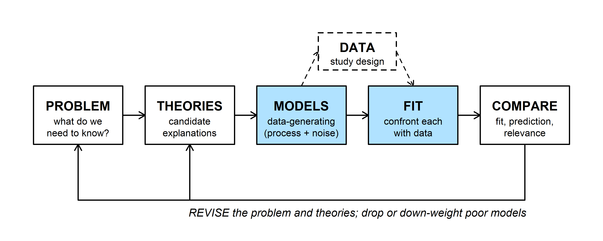
Male greater sage-grouse gather each spring on leks (display grounds), where they can be counted. A state wildlife agency has counted the same set of leks in one population every spring since 1996.
grouse <- read.csv("data/SageGrouseTrend.csv")
head(grouse, 4)## year males precip_z log_true
## 1 1996 325 0.91 5.738
## 2 1997 309 1.67 6.025
## 3 1998 373 -1.24 5.917
## 4 1999 232 -0.12 5.581males is the total count, and precip_z is spring precipitation in the year before the count, in standard deviations from its long-term mean.2
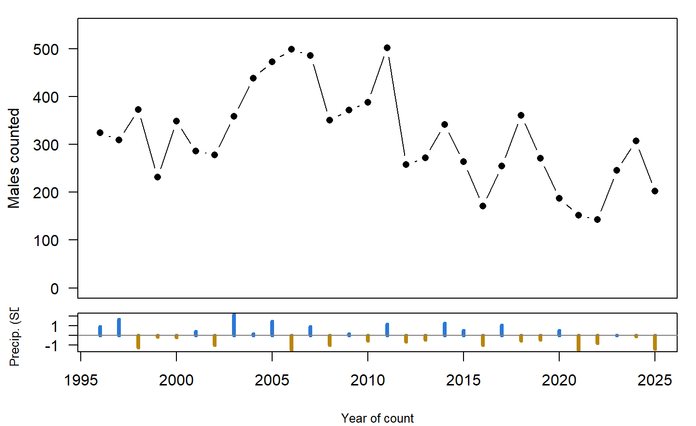
The count peaked at 502 males in 2011. Over the last five years it has averaged 210, against 368 for the first fifteen. The agency's questions:
- Is this population in a decline that will continue, or a low stretch it should recover from?
- What counts should we expect over the next five years, and how much does that depend on precipitation?
Both questions are about the future, so we need a model of how the population gets from one year to the next. A standard one is the Gompertz model:
\[N_t = N_{t-1}\,\exp\!\big(a + (b - 1)\log N_{t-1} + c\,w_t + \varepsilon_t\big)\]
The exponent is the population's growth rate from year \(t-1\) to year \(t\). It has a baseline \(a\), a term that lowers growth when the population is already large (if \(b < 1\)), an effect \(c\) of the covariate \(w_t\) (here, precipitation), and noise. Taking logs, with \(x_t = \log N_t\), gives a linear model:
\[x_t = a + b\,x_{t-1} + c\,w_t + \varepsilon_t, \qquad \varepsilon_t \sim N(0, \sigma_p^2)\]
- \(b\) measures density dependence. With \(b = 1\) there is none: growth doesn't depend on population size, and the population wanders as a random walk with drift \(a\). With \(0 < b < 1\) the population is pulled back toward an equilibrium at \(x^* = a / (1 - b)\), faster for smaller \(b\).3
- \(\varepsilon_t\) is process noise: good and bad years the covariate doesn't capture. It changes the real population, so it is part of \(x_t\) and is carried into \(x_{t+1}\), \(x_{t+2}\), and so on.
We don't see \(x_t\). We see a count, and the log of the count is
\[y_t = x_t + \delta_t, \qquad \delta_t \sim N(0, \sigma_o^2)\]
where \(\delta_t\) is observation noise: birds missed, leks visited on a poor morning. It affects one year's count and nothing else.4
The widget simulates this model (without the covariate). Leave the "filter" box unchecked for now.
Question: Set the observation noise to 0 and raise the process noise; then do the reverse. Both give a jagged series of counts. What differs between them? Look at how long the counts stay on one side of the equilibrium line.
Question: A very wet spring adds 0.3 to \(x_t\). With \(b = 0.7\), how much of that is left one year later? Two years later? What is left one year after an observer overcounts by the same amount?
2. Fitting with one kind of noise
If only one kind of noise were present, we could fit this model with tools from earlier in the semester. Bolker (section 11.4) recommends trying both simple fits before anything fancier.
Process noise only (\(\sigma_o = 0\)). The counts are then the true states, so each year's log count can be predicted from the previous year's observed log count. That is a linear regression of \(y_t\) on \(y_{t-1}\) and \(w_t\), which Bolker calls one-step-ahead fitting:
y <- log(grouse$males)
w <- grouse$precip_z
n <- length(y)
fit_proc <- lm(y[-1] ~ y[-n] + w[-1])
round(summary(fit_proc)$coefficients, 3)## Estimate Std. Error t value Pr(>|t|)
## (Intercept) 2.287 0.841 2.718 0.012
## y[-n] 0.597 0.147 4.064 0.000
## w[-1] 0.111 0.049 2.245 0.033Observation noise only (\(\sigma_p = 0\)). The population then follows the deterministic curve exactly, starting from some \(x_1\), and all the scatter is counting error. We fit the whole curve at once (trajectory matching, or "shooting"):
nll_traj <- function(par) {
x <- numeric(n)
x[1] <- par[4]
for (t in 2:n) x[t] <- par[1] + par[2] * x[t - 1] + par[3] * w[t]
-sum(dnorm(y, x, exp(par[5]), log = TRUE))
}
fit_traj <- optim(c(coef(fit_proc), y[1], log(0.2)), nll_traj, method = "BFGS", control = list(maxit = 500))
round(c(a = fit_traj$par[1], b = fit_traj$par[2], c = fit_traj$par[3], sigma_o = exp(fit_traj$par[5])), 3)## a.(Intercept) b.y[-n] c.w[-1] sigma_o
## 0.525 0.905 0.156 0.257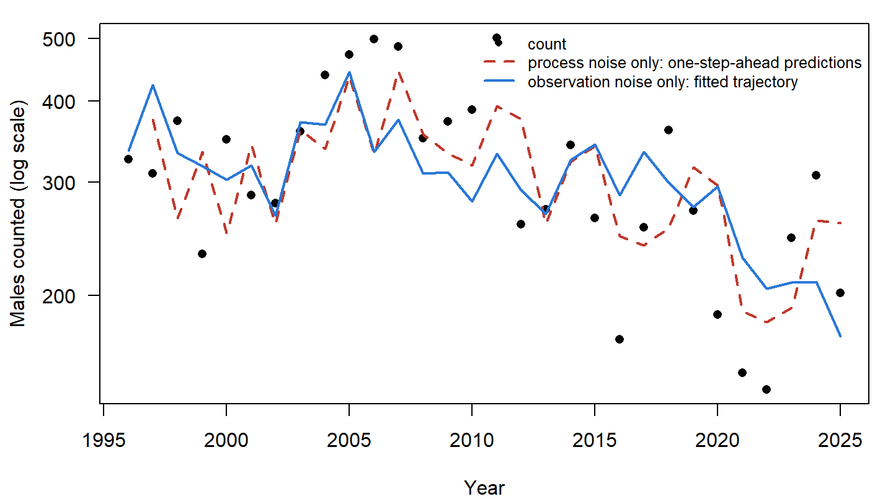
The same equation and the same data give \(\hat b =\) 0.60 (process noise only) and 0.91 (observation noise only). The first describes a population that snaps back to its equilibrium within a couple of years. The second describes one that barely feels its own density. The one-step-ahead predictions (dashed) chase last year's count; the fitted trajectory (solid) ignores the counts entirely and responds only to precipitation.
Question: The count in 2016 was well below the counts on either side. What does each fit say happened that year? What does each predict for 2017 as a result?
Each fit blames every departure on a single cause, and the truth is some of each. The cost of getting this wrong is not symmetric, and section 5 returns to it.
3. The state-space model
Keep both equations:
\[\begin{aligned} \text{state:} \quad & x_t = a + b\,x_{t-1} + c\,w_t + \varepsilon_t, & \varepsilon_t \sim N(0, \sigma_p^2)\\ \text{observation:} \quad & y_t = x_t + \delta_t, & \delta_t \sim N(0, \sigma_o^2) \end{aligned}\]
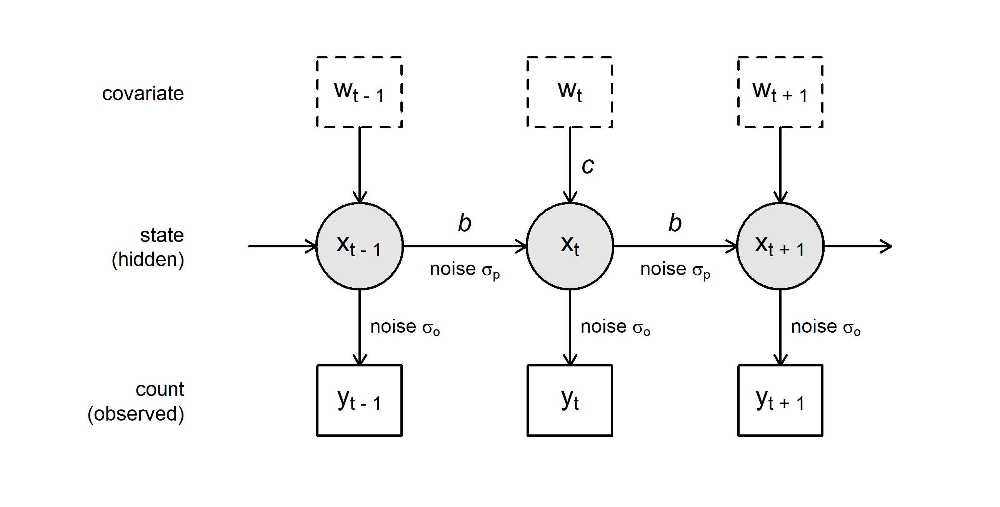
The states \(x_1, \dots, x_n\) are unobserved random quantities with their own distribution, which makes them random effects, one per year, and makes this a hierarchical model. As with any random effect, the likelihood of the parameters \((a, b, c, \sigma_p, \sigma_o)\) comes from integrating the hidden states out. Because every piece of this model is Normal and linear, that integral can be done exactly, and there are three ways to organize the work.
One multivariate Normal
The state equation is an AR(1) process: the departure of \(x_t\) from its expected value carries over to the next year with coefficient \(b\) (the role \(\phi\) played before). Adding independent observation noise puts an extra \(\sigma_o^2\) on the diagonal. So the log counts are one draw from a multivariate Normal:
\[\mathbf{y} \sim \text{MVN}(\boldsymbol\mu, V), \qquad V_{st} = \frac{\sigma_p^2}{1 - b^2}\,b^{|s - t|} + \sigma_o^2\,[s = t]\]
The mean follows the deterministic part of the model, \(\mu_t = a + b\,\mu_{t-1} + c\,w_t\).5
nll_mvn <- function(par) {
a <- par[1]
b <- plogis(par[2]) # keeps 0 < b < 1
c <- par[3]
sigma_p <- exp(par[4])
sigma_o <- exp(par[5])
mu <- numeric(n)
m <- a / (1 - b)
for (t in seq_len(n)) mu[t] <- m <- a + b * m + c * w[t]
V <- sigma_p^2 / (1 - b^2) * b^abs(outer(1:n, 1:n, "-")) + sigma_o^2 * diag(n)
-mvtnorm::dmvnorm(y, mu, V, log = TRUE)
}
start <- c(1.7, qlogis(0.7), 0.1, log(0.15), log(0.15))
fit_mvn <- optim(start, nll_mvn, method = "BFGS")
fit_mvn$value## [1] -0.2045389This is the model-the-variance approach of Weeks 11 through 14, with a covariance matrix that has two parts.6 It works, but it builds and inverts an \(n \times n\) matrix, and it never tells us what the hidden states were.
The Kalman filter
The Kalman filter gets the same likelihood by walking through the series one year at a time. At each step it holds a Normal belief about the current state: a best guess \(\hat x\) and a variance \(P\). Each year has three moves.
Predict. Push last year's belief through the state equation:
\[\hat x_{t|t-1} = a + b\,\hat x_{t-1|t-1} + c\,w_t, \qquad P_{t|t-1} = b^2 P_{t-1|t-1} + \sigma_p^2\]
(Read \(\hat x_{t|t-1}\) as "the estimate of \(x_t\) using counts through year \(t-1\).")
Score. Before seeing \(y_t\), the model expects it to be Normal with mean \(\hat x_{t|t-1}\) and variance \(P_{t|t-1} + \sigma_o^2\). The log density of the actual \(y_t\) under that distribution is this year's contribution to the log-likelihood.
Update. Move the guess toward the count:
\[K_t = \frac{P_{t|t-1}}{P_{t|t-1} + \sigma_o^2}, \qquad \hat x_{t|t} = \hat x_{t|t-1} + K_t\,(y_t - \hat x_{t|t-1}), \qquad P_{t|t} = (1 - K_t)\,P_{t|t-1}\]
\(K_t\), the Kalman gain, is the weight given to the new count. If counts are exact (\(\sigma_o = 0\)), \(K_t = 1\) and the estimate jumps to the count. If counts are very noisy, \(K_t\) is near 0 and the estimate stays with the prediction. This is the precision-weighted average behind partial pooling, with the model's prediction playing the part of the population-level mean (derivation).
# d: covariate effect on the observation (0 until section 4)
kalman <- function(a, b, c, sigma_p, sigma_o, d = 0, y = log(grouse$males), w = grouse$precip_z) {
n <- length(y)
x_pred <- P_pred <- x_filt <- P_filt <- numeric(n)
x_hat <- a / (1 - b) # belief before year 1: at equilibrium
P <- sigma_p^2 / (1 - b^2)
nll <- 0
for (t in seq_len(n)) {
x_hat <- a + b * x_hat + c * w[t] # predict
P <- b^2 * P + sigma_p^2
x_pred[t] <- x_hat
P_pred[t] <- P
nll <- nll - dnorm(y[t], x_hat + d * w[t], sqrt(P + sigma_o^2), log = TRUE) # score
K <- P / (P + sigma_o^2) # update
x_hat <- x_hat + K * (y[t] - d * w[t] - x_hat)
P <- (1 - K) * P
x_filt[t] <- x_hat
P_filt[t] <- P
}
list(nll = nll, x_pred = x_pred, P_pred = P_pred, x_filt = x_filt, P_filt = P_filt, K = K)
}
nll_ss <- function(par, ...) kalman(par[1], plogis(par[2]), par[3], exp(par[4]), exp(par[5]), ...)$nll
c(mvn = nll_mvn(start), kalman = nll_ss(start)) # same likelihood, two ways## mvn kalman
## 0.2488336 0.2488336fit_ss <- optim(start, nll_ss, method = "BFGS", hessian = TRUE)| Parameter | Truth | Estimate | 95% lower | 95% upper |
|---|---|---|---|---|
| a | 1.71 | 1.42 | -0.43 | 3.28 |
| b (density dependence) | 0.70 | 0.75 | 0.35 | 0.94 |
| c (precipitation) | 0.15 | 0.14 | 0.04 | 0.23 |
| sigma_p (process SD) | 0.15 | 0.15 | 0.05 | 0.44 |
| sigma_o (observation SD) | 0.20 | 0.17 | 0.08 | 0.36 |
The two functions return the same negative log-likelihood, and optim() lands on the same estimates from either. The state-space estimate of density dependence, \(\hat b =\) 0.75, falls between the two one-noise fits (0.60 and 0.91), and the equilibrium is \(\exp(\hat a / (1 - \hat b)) =\) 289 males. Look at the interval for \(b\), though: 0.35 to 0.94. Thirty years of counts say little about how strong the density dependence is.7 The precipitation effect is better determined.
The filter's last gain is \(K =\) 0.51: each new count moves the estimate of the population a bit more than halfway from the model's prediction toward the count. Go back to the widget and check the "filter" box to see this at work: the filtered line follows the counts closely when observation noise is small and smooths through them when it is large.
Question: In the widget, with the filter on, raise the observation noise from 0.05 to 0.4 while leaving the process noise at 0.15. What happens to the Kalman gain, and to how the filtered line treats a single unusually high count?
The Kalman filter's cost grows in proportion to \(n\), where the multivariate Normal's grows with \(n^3\). For 30 years nobody would notice. For daily data, or thousands of animals' tracks, the difference decides whether the model can be fit.
Hidden states as random effects
The third way is the most general. Write the joint negative log-likelihood of the data and the hidden states, as if the states were known, and let software integrate the states out. The joint likelihood is three lines, one per arrow type in the diagram:
library(RTMB)
nll_joint <- function(p) {
b <- plogis(p$logit_b)
sigma_p <- exp(p$log_sigma_p)
sigma_o <- exp(p$log_sigma_o)
x <- p$x # the hidden states
nll <- -dnorm(x[1], p$a / (1 - b) + p$c * w[1], sigma_p / sqrt(1 - b^2), log = TRUE) # first state
nll <- nll - sum(dnorm(x[-1], p$a + b * x[-n] + p$c * w[-1], sigma_p, log = TRUE)) # state equation
nll - sum(dnorm(y, x, sigma_o, log = TRUE)) # observation equation
}
par_list <- list(a = 1.7, logit_b = qlogis(0.7), c = 0.1, log_sigma_p = log(0.15), log_sigma_o = log(0.15), x = y)
obj <- MakeADFun(nll_joint, par_list, random = "x", silent = TRUE)
fit_tmb <- nlminb(obj$par, obj$fn, obj$gr)
sdr <- sdreport(obj)
c(kalman = fit_ss$value, rtmb = fit_tmb$objective)## kalman rtmb
## -0.2045389 -0.2045389random = "x" tells RTMB which parameters to integrate out. It does so with the Laplace approximation, which is exact when everything is Normal, so the answer matches the Kalman filter to the last digit. This is also what glmmTMB and sdmTMB do internally: both are front ends to the same engine (TMB).8
The payoff is flexibility. A covariate anywhere, a different growth function, or counts that are Poisson instead of log-Normal each change one line of nll_joint(), and the Kalman filter no longer applies to most of those (bonus). It is also how most students' own dynamic models will be fit.
4. States, covariates, and forecasts
Estimating the hidden states
The Kalman filter's \(\hat x_{t|t}\) uses the counts up to year \(t\). With the whole series in hand we can do better, since later counts also say something about year \(t\). Those smoothed estimates are the random-effect estimates from the RTMB fit, with standard errors:
smooth <- as.data.frame(summary(sdr, "random"))
names(smooth) <- c("x_hat", "se")
head(round(smooth, 3), 3)## x_hat se
## x 5.747 0.123
## x.1 5.891 0.148
## x.2 5.745 0.122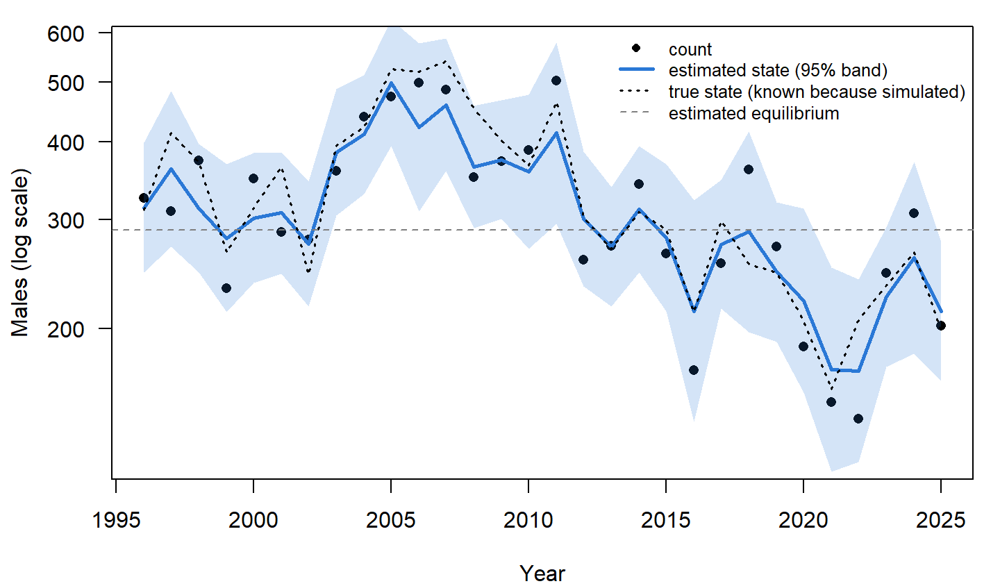
The estimated state is smoother than the counts: the model attributes part of each year's departure to counting error and discounts it. For 2016 the count was 171 males and the estimated state is 213 (the true value was 213). Because the data are simulated we can check: the band covers the true state in 100% of years, and the estimated states are closer to the truth than the raw log counts are (root mean squared error 0.10 against 0.16).
Where does a covariate go?
A covariate can enter either equation, and the two choices say different things.
- In the state equation (\(c\,w_t\), as above) it changes the population. Its effect is carried forward by \(b\) like any other change in the state.
- In the observation equation, \(y_t = x_t + d\,w_t + \delta_t\), it changes what the surveyors see without changing how many birds there are. Count date, observer experience, and weather on the morning of the count are covariates of this kind.
The kalman() function already has the argument d, so the alternative model takes one line:
nll_ss_obs <- function(par) kalman(par[1], plogis(par[2]), 0, exp(par[4]), exp(par[5]), d = par[3])$nll
fit_ss_obs <- optim(start, nll_ss_obs, method = "BFGS")
c(precip_in_state = -fit_ss$value, precip_in_observation = -fit_ss_obs$value) # log-likelihoods## precip_in_state precip_in_observation
## 0.2045389 -1.6263307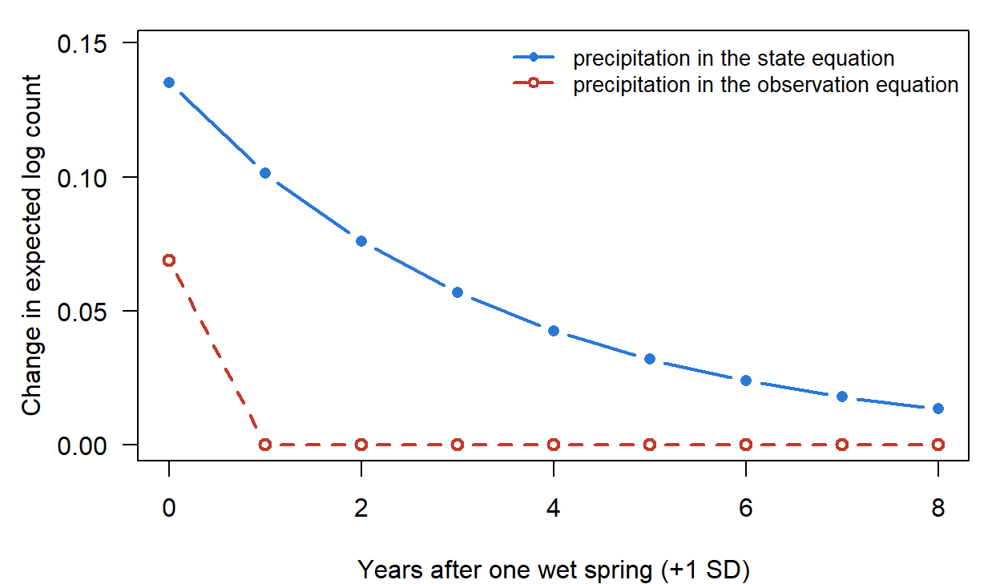
Both models have five parameters, so the log-likelihoods compare directly: the state-equation version is ahead by 1.8 units (3.7 AIC units), which is some support and far from decisive. The figure shows what the data have to go on. In the state equation, one wet spring raises the population for years afterward, by \(c\,b^k\) after \(k\) years. In the observation equation the effect is gone the next year. A run of wet springs therefore builds up: if precipitation stayed 1 SD above average indefinitely, the equilibrium would rise by \(\hat c / (1 - \hat b) =\) 0.54 on the log scale, a factor of 1.7.
Question: For each of these covariates, which equation does it belong in, and could it belong in both? (a) acres burned in the population's range last summer; (b) the number of mornings each lek was visited; (c) snow depth on the day of the count.
Forecasting
A forecast is the Kalman filter's predict step repeated with no update step, since there are no new counts. Precipitation in future years is unknown, so we forecast under scenarios:
forecast_ss <- function(w_future) {
x_hat <- kf$x_filt[n]
P <- kf$P_filt[n]
out <- data.frame(year = max(grouse$year) + seq_along(w_future), x_hat = NA, sd = NA)
for (h in seq_along(w_future)) {
x_hat <- est_ss["a"] + est_ss["b"] * x_hat + est_ss["c"] * w_future[h]
P <- est_ss["b"]^2 * P + est_ss["sigma_p"]^2
out$x_hat[h] <- x_hat
out$sd[h] <- sqrt(P)
}
out
}
fc_avg <- forecast_ss(rep(0, 5)) # average precipitation
fc_dry <- forecast_ss(rep(-1, 5)) # five dry springs in a row
round(cbind(year = fc_avg$year, average = exp(fc_avg$x_hat), dry = exp(fc_dry$x_hat)))## year average dry
## [1,] 2026 230 201
## [2,] 2027 244 192
## [3,] 2028 254 186
## [4,] 2029 262 181
## [5,] 2030 269 178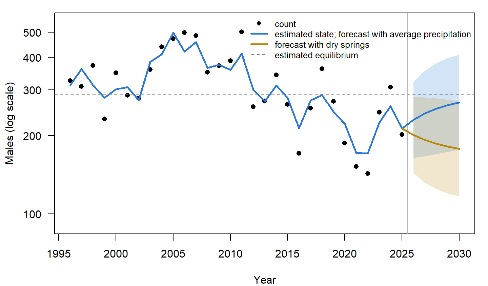
Under average precipitation the forecast climbs back toward the equilibrium of 289 males, a feature of any model with \(b < 1\). Under continued dry springs it settles near 168 instead. The bands widen for a few years and then level off, because density dependence limits how far process noise can carry the population.9
What we can tell the agency so far:
- The population is now at about 213 males, below an estimated equilibrium of 289.
- The last eight springs before each count averaged -0.52 SD in precipitation. The low stretch is what the model expects from dry years plus ordinary noise, with no change in the population's underlying dynamics.
- Recovery depends on precipitation. With average springs the model expects 269 males in 2030 (95% band 176 to 410); with dry springs, 178.
This model is one candidate. It hasn't been compared with a rival in which the equilibrium itself has dropped (habitat loss, say), and that rival would predict no recovery.
5. What goes wrong
State-space models ask a lot of a single time series. Two problems come up often enough to plan for.
Ignoring observation noise exaggerates density dependence
The one-step-ahead regression uses last year's count as its predictor, and the count is the state plus error. Error in a predictor pulls its slope toward zero. Here the slope is \(b\), and a \(b\) closer to zero means stronger density dependence. The simulation below draws 500 series from the true model and fits each both ways, for 30 years and for 100:
sim_gompertz <- function(n, a = 0.3 * log(300), b = 0.7, c = 0.15, sigma_p = 0.15, sigma_o = 0.20) {
w <- rnorm(n)
x <- numeric(n)
x_prev <- rnorm(1, a / (1 - b), sigma_p / sqrt(1 - b^2))
for (t in seq_len(n)) x_prev <- x[t] <- a + b * x_prev + c * w[t] + rnorm(1, 0, sigma_p)
list(y = x + rnorm(n, 0, sigma_o), w = w)
}
fit_both <- function(n) {
s <- sim_gompertz(n)
b_lm <- coef(lm(s$y[-1] ~ s$y[-n] + s$w[-1]))[2]
f <- try(optim(c(1.7, qlogis(0.7), 0.15, log(0.15), log(0.20)), nll_ss, y = s$y, w = s$w, method = "BFGS"),
silent = TRUE)
if (inherits(f, "try-error")) return(c(b_lm, NA, NA, NA))
c(b_lm, plogis(f$par[2]), exp(f$par[4]), exp(f$par[5]))
}
set.seed(746)
sims30 <- t(replicate(500, fit_both(30)))
sims100 <- t(replicate(500, fit_both(100)))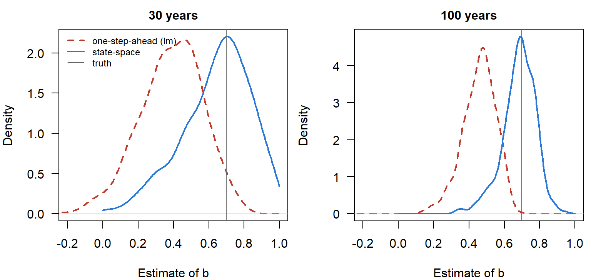
The true \(b\) is 0.7. The regression averages 0.39 with 30 years and 0.46 with 100. More data helps only a little, because most of the bias is built into the method: with an endless series the regression would still give about 0.48. The state-space estimate averages 0.64 and 0.68. It is closer to the truth on average, but with 30 years its estimates are spread across most of the range from 0 to 1.10
Two variances from one series
The second problem is in the state-space fit itself. The data have to divide the total variation into process and observation noise, and the only information for doing so is the pattern of autocorrelation. Below is the profile log-likelihood for the two SDs in the grouse data (each point maximized over \(a\), \(b\), and \(c\)):
sd_grid <- seq(0.01, 0.36, length.out = 30)
profile_nll <- outer(sd_grid, sd_grid, Vectorize(function(sp, so) {
f <- function(p) kalman(p[1], plogis(p[2]), p[3], sp, so)$nll
optim(fit_ss$par[1:3], f, method = "BFGS")$value
}))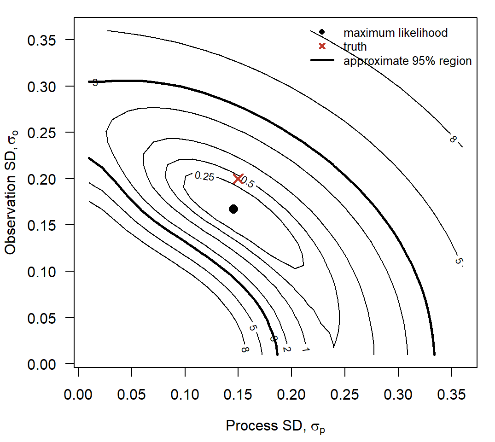
The surface is a curved ridge. Along it, less process noise can be traded for more observation noise with little loss of fit, and the approximate 95% region (heavy line) reaches both axes: these data can't rule out \(\sigma_p = 0\) or \(\sigma_o = 0\). In the simulations above, 42% of the 30-year fits put one of the two SDs at essentially zero, although both were truly present; with 100 years it was 3%.11 When a fit reports an SD of zero, read it as "can't be separated," and don't conclude that kind of noise is absent.
What helps is information about one of the variances from outside the time series:
- Replicate counts. Leks are usually counted several times each spring. The spread among counts in one spring estimates \(\sigma_o\) directly, since the population didn't change between mornings.
- A known or prior-informed \(\sigma_o\), from a double-observer study or from other populations.
- Several populations that share parameters, fit together.
Fixing \(\sigma_o\) at its true value of 0.20 here, as if replicate counts had supplied it, moves the 95% interval for \(b\) from 0.35 to 0.94 to 0.48 to 0.94.
Discussion
Discussion: Three fits of the same data give density dependence \(\hat b\) of 0.60 (process noise only), 0.91 (observation noise only), and 0.75 (state-space, 95% interval 0.35 to 0.94). The agency wants to know how fast the population would recover from a bad year. What would you tell them, and which of the three numbers would you put in the report?
Discussion: A colleague fits the state-space model to 12 years of counts from another population and gets \(\hat\sigma_o = 0\). She concludes the counts are exact and switches to the one-step-ahead regression, which is simpler. What is wrong with the reasoning, and what would you do with 12 years of data?
Bonus: where the Kalman update comes from
Before seeing this year's count, our belief about the state is \(x_t \sim N(\hat x_{t|t-1}, P_{t|t-1})\). That is a prior. The count has likelihood \(y_t \sim N(x_t, \sigma_o^2)\). A Normal prior times a Normal likelihood gives a Normal posterior (conjugacy), whose precision (1/variance) is the sum of the two precisions and whose mean is the precision-weighted average:
\[\frac{1}{P_{t|t}} = \frac{1}{P_{t|t-1}} + \frac{1}{\sigma_o^2}, \qquad \hat x_{t|t} = \frac{\hat x_{t|t-1}/P_{t|t-1} + y_t/\sigma_o^2} {1/P_{t|t-1} + 1/\sigma_o^2}\]
Multiply the top and bottom of the second expression by \(P_{t|t-1}\,\sigma_o^2\) and collect terms, and it becomes \(\hat x_{t|t-1} + K_t (y_t - \hat x_{t|t-1})\) with \(K_t = P_{t|t-1} / (P_{t|t-1} + \sigma_o^2)\). So the filter does one Bayesian update per year, with each year's posterior pushed through the state equation to become the next year's prior. The likelihood contribution in the "score" step is the prior predictive density of \(y_t\), and multiplying those together across years is the chain rule of probability, \(P(y_1, \dots, y_n) = P(y_1)\,P(y_2 \mid y_1)\cdots P(y_n \mid y_1, \dots, y_{n-1})\).12
Bonus: what observation noise does to the ACF
The Week 12 page shows how to tell autoregressive (AR) from moving-average (MA) errors by their autocorrelation and partial autocorrelation functions, with a widget for trying it on simulated series (AR or MA?). The same plots say something about a state-space model.
The Gompertz state is AR(1), so its autocorrelation at lag \(k\) is \(b^k\). Adding observation noise turns the observed series into a mixture of the two types, an ARMA(1,1). Its ACF still decays at rate \(b\) per lag, but it starts lower than an AR(1) would, because observation noise adds variance to every count without adding any covariance between counts:
\[\text{Cor}(y_t, y_{t-k}) = b^k \, \frac{\text{Var}(x)}{\text{Var}(x) + \sigma_o^2}\]
At the grouse estimates (leaving precipitation aside) the fraction is 0.63, so the lag-1 correlation of the counts would be 0.47, not 0.75. That lowered starting point is the only signal in the data for separating \(\sigma_p\) from \(\sigma_o\), which is why the separation is so fragile. And with 30 years the plots themselves are barely readable:
par(mfrow = c(1, 2), mar = c(4, 4, 2.5, 0.5))
acf(y, lag.max = 10, main = "Grouse log counts: ACF")
pacf(y, lag.max = 10, main = "Grouse log counts: PACF")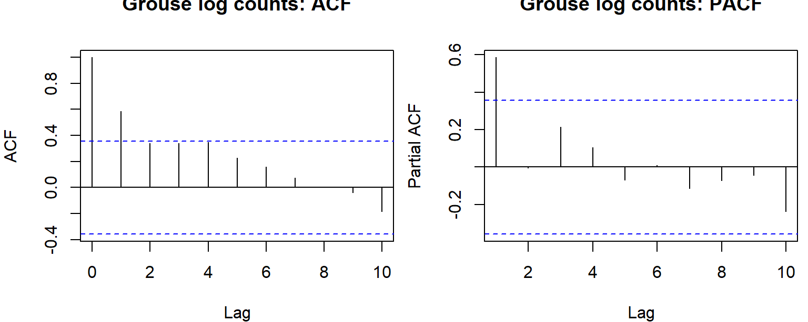
The dashed bounds are \(\pm 1.96/\sqrt{n}\), which is \(\pm\) 0.36 here. Real autocorrelation hides easily in a series this short.
Bonus: counts instead of log counts
Taking logs of counts works when counts are in the hundreds. For small counts, or series with zeros, model the count itself. Only the observation line of nll_joint() changes; here the count is negative binomial with mean \(e^{x_t}\):
males <- grouse$males
nll_joint_nb <- function(p) {
b <- plogis(p$logit_b)
sigma_p <- exp(p$log_sigma_p)
x <- p$x
mu <- exp(x)
nll <- -dnorm(x[1], p$a / (1 - b) + p$c * w[1], sigma_p / sqrt(1 - b^2), log = TRUE)
nll <- nll - sum(dnorm(x[-1], p$a + b * x[-n] + p$c * w[-1], sigma_p, log = TRUE))
nll - sum(dnbinom2(males, mu, mu + mu^2 / exp(p$log_size), log = TRUE)) # variance = mu + mu^2 / size
}
obj_nb <- MakeADFun(nll_joint_nb, list(a = 1.7, logit_b = qlogis(0.7), c = 0.1, log_sigma_p = log(0.15),
log_size = log(20), x = y), random = "x", silent = TRUE)
fit_nb <- nlminb(obj_nb$par, obj_nb$fn, obj_nb$gr)
round(c(a = unname(fit_nb$par["a"]), b = plogis(unname(fit_nb$par["logit_b"])), c = unname(fit_nb$par["c"]),
sigma_p = exp(unname(fit_nb$par["log_sigma_p"])), size = exp(unname(fit_nb$par["log_size"]))), 3)## a b c sigma_p size
## 1.371 0.759 0.134 0.139 39.167The estimates barely move, as they should with counts this large. The integral over the states is no longer exact, since a negative binomial times a Normal has no closed form; the Laplace approximation is now doing real work, as it does in any GLMM. The Kalman filter doesn't apply at all.
Bonus: other dynamic models
The same two-equation structure covers much more than one population with Gompertz growth.
- Harvested populations. A surplus production model subtracts the catch in the state equation, \(B_{t+1} = B_t + r B_t (1 - B_t / K) - C_t\), and treats a survey or catch-per-effort index as the observation. This is the simplest kind of fisheries stock assessment; current versions are state-space models fit with
TMB(SPiCT; Pedersen and Berg 2017, Fish and Fisheries 18: 226-243) or by MCMC (JABBA). - Nonlinear growth. Ricker, theta-logistic, or predator-prey dynamics make the state equation nonlinear. The Laplace route above still works for mild nonlinearity; strongly nonlinear or chaotic models call for MCMC or simulation-based methods (particle filters, in the
pompandnimblepackages). - Continuous time. When the model is a differential equation (Bolker's section 11.2), the state equation is solved numerically between observations (
deSolve), and observation-noise-only trajectory matching is the common starting point. - Many time series.
MARSSfits several populations at once, with shared or separate parameters and correlated process noise. The spatiotemporal model below does the same with correlation that depends on distance. - Age or stage structure. Integrated population models combine counts with survival and reproduction data in one state-space likelihood.
- Discrete states. When the hidden state is a category (occupied or empty; resting, foraging, or traveling), the model is a hidden Markov model. Dynamic occupancy is the example on this page.
A spatiotemporal analysis from start to finish
The state-space model above follows one population. Most monitoring programs follow many sites, and the sites are on a map. This part takes a lek-by-lek data set from the agency's questions to an answer, using a model that has a covariate that varies in space and time, a spatial random field, and a second field that changes from year to year with AR(1) dynamics. It uses sdmTMB throughout.
1. Problem and data

A district covering 100 by 80 km has 60 leks, each counted every spring from 2011 to 2025.
lk <- read.csv("data/LekCounts.csv")
lk$sage_c <- (lk$sagebrush_pct - 20) / 10 # sagebrush cover: 10-point units above 20%
head(lk, 3)## lek x_km y_km sagebrush_pct year precip_z males eps_true sage_c
## 1 L01 27.5 71.4 35 2011 0.31 22 -0.836 1.5
## 2 L02 37.7 24.3 19 2011 -0.39 46 0.645 -0.1
## 3 L03 57.0 36.9 26 2011 -0.39 69 0.520 0.6Each row is one lek in one year: its coordinates in km, sagebrush cover within 1 km (percent, treated as fixed over these years), the previous spring's precipitation at that lek (precip_z, in SD units), and the count of males.13 Precipitation differs among years and, within a year, among leks: it is a spatiotemporal covariate.
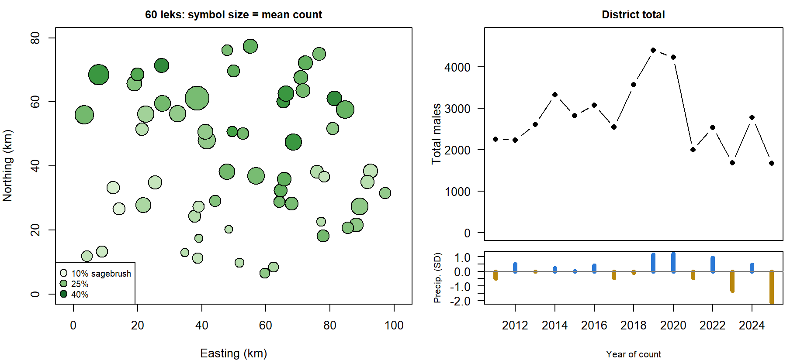
The district total rose to 4401 males in 2019 and was 1670 in 2025. The agency's questions:
- How much of the drop since 2019 is explained by precipitation, and where in the district are counts lower than precipitation and habitat can account for?
- What should we expect to count over the next two springs?
2. Candidate models
All of the candidates treat the count at lek \(s\) in year \(t\) as negative binomial, with a log link:
\[\text{males}_{s,t} \sim \text{NegBin}(\mu_{s,t}, \text{size}), \qquad \log \mu_{s,t} = \beta_0 + \beta_1\,\text{sage}_s + \beta_2\,\text{precip}_{s,t} + \omega_s + \epsilon_{s,t}\]
- \(\omega_s\) is a spatial field that stays put: some parts of the district hold more birds every year, for reasons not in the model. This is the field from the Week 14 page, with SD \(\sigma_s\).
- \(\epsilon_{s,t}\) is a spatiotemporal field: a new map of departures every year, with SD \(\sigma_{st}\). The candidates differ in how one year's map relates to the next.
| Model | Fields | What it says |
|---|---|---|
| M0 | none | habitat and precipitation explain the counts; the rest is independent noise |
| M1 | \(\omega_s\) only | some places are always better |
| M2 | \(\omega_s\) + independent \(\epsilon_{s,t}\) | good and bad patches appear each year, with no memory |
| M3 | \(\omega_s\) + AR(1) \(\epsilon_{s,t}\) | good and bad patches persist and fade |
| M4 | \(\omega_s\) + random-walk \(\epsilon_{s,t}\) | patches persist and never fade |
M3 is the spatial version of the model in the first part of this page. Its field follows
\[\epsilon_{s,t} = \rho\,\epsilon_{s,t-1} + \eta_{s,t}\]
where each year's shocks \(\eta_{s,t}\) are spatially correlated: a drought, fire, or disease outbreak hits neighboring leks together. Compare the Gompertz state equation written as departures from equilibrium, \(x_t - x^* = b\,(x_{t-1} - x^*) + \varepsilon_t\): here \(\rho\) plays the part of \(b\), and the shocks are process noise with a map.14 M4 sets \(\rho = 1\) (no density dependence, in the Gompertz reading). The negative binomial is the observation model. The hidden state is the whole surface \(\log\mu_{s,t}\), and the Laplace approximation integrates the fields out, as in the RTMB fit.
One difference from that model matters for interpretation. Precipitation here sits in the regression part, outside the AR(1) recursion, so \(\beta_2\) is its effect on that year's expected count and is not carried forward by \(\rho\). This is the regression-with-AR-errors form.15
Question: Picture the yearly maps of \(\epsilon_{s,t}\) for five years in a row under M2 and under M3. How would the two sets of maps differ? Which model has a better chance of forecasting next year?
3. Fit and check
time = "year" tells sdmTMB which column indexes time, and spatiotemporal picks the structure. The mesh is built as on the Week 14 page.
library(sdmTMB)
# one call for every candidate with fields; `...` passes extra arguments to sdmTMB()
fit_st <- function(spatiotemporal, data = lk, ...) {
sdmTMB(males ~ sage_c + precip_z, data = data, mesh = make_mesh(data, c("x_km", "y_km"), cutoff = 5),
family = nbinom2(), spatial = "on", time = "year", spatiotemporal = spatiotemporal, ...)
}
m0 <- sdmTMB(males ~ sage_c + precip_z, data = lk, family = nbinom2(), spatial = "off")
m1 <- fit_st("off")
m2 <- fit_st("iid")
m3 <- fit_st("ar1")
m4 <- fit_st("rw")sanity(m3)## ✔ Non-linear minimizer suggests successful convergence## ✔ Hessian matrix is positive definite## ✔ No extreme or very small eigenvalues detected## ✔ No gradients with respect to fixed effects are >= 0.001## ✔ No fixed-effect standard errors are NA## ✔ No standard errors look unreasonably large## ✔ No sigma parameters are < 0.01## ✔ No sigma parameters are > 100## ✔ Range parameter doesn't look unreasonably largetidy(m3, conf.int = TRUE)## # A tibble: 3 × 5
## term estimate std.error conf.low conf.high
## <chr> <dbl> <dbl> <dbl> <dbl>
## 1 (Intercept) 3.48 0.236 3.02 3.94
## 2 sage_c 0.394 0.101 0.196 0.592
## 3 precip_z 0.245 0.0236 0.198 0.291tidy(m3, "ran_pars", conf.int = TRUE)## # A tibble: 5 × 5
## term estimate std.error conf.low conf.high
## <chr> <dbl> <dbl> <dbl> <dbl>
## 1 range 28.4 4.37 21.0 38.3
## 2 phi 6.24 0.460 5.40 7.21
## 3 sigma_O 0.574 0.0895 0.423 0.779
## 4 sigma_E 0.336 0.0393 0.267 0.423
## 5 rho 0.723 NA 0.520 0.849All of sanity()'s checks pass. The precipitation effect is 0.24 (truth 0.25) and the AR(1) coefficient \(\hat\rho\) is 0.72 (95% interval 0.52 to 0.85; truth 0.7). The sagebrush effect is 0.39 with a standard error of 0.10 (truth 0.4). Model M0, with no fields, reports a standard error of 0.04 for the same coefficient: sagebrush is a property of the lek, there are only 60 leks, and M0 counts each of a lek's 15 years as a fresh piece of evidence about it.
For a dynamic model the residual check that matters most is correlation through time. If the model has captured the dynamics, a lek's residual this year should say nothing about its residual next year:
set.seed(746)
resid_lag1 <- function(fit) {
r <- residuals(fit, type = "mle-mvn") # randomized quantile residuals, Normal if the model is right
o <- order(lk$lek, lk$year)
same_lek <- lk$lek[o][-1] == lk$lek[o][-nrow(lk)]
cor(r[o][-1][same_lek], r[o][-nrow(lk)][same_lek])
}
lag1 <- c(M1 = resid_lag1(m1), M2 = resid_lag1(m2), M3 = resid_lag1(m3))
round(lag1, 2) # lag-1 correlation of residuals within leks## M1 M2 M3
## 0.31 0.24 0.13M1 leaves a lag-1 residual correlation of 0.31: leks that were above expectation one year tend to be above it the next. M3 removes most of that (0.13).
4. Compare
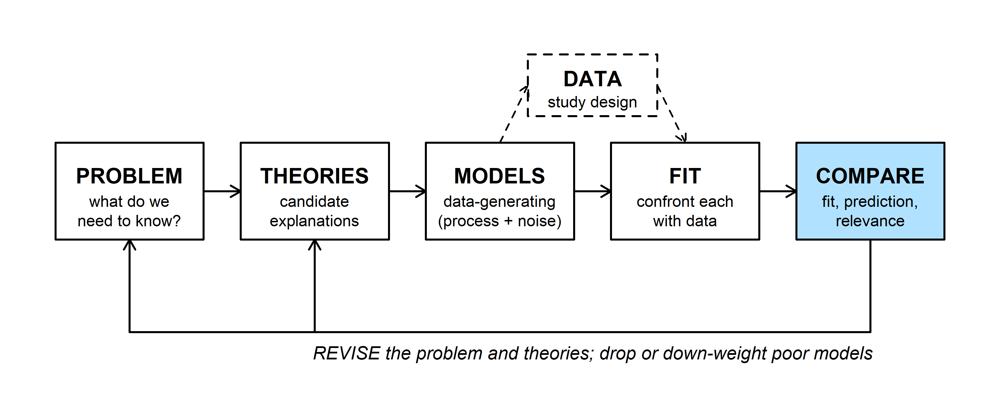
aic <- AIC(m0, m1, m2, m3, m4)
aic$dAIC <- aic$AIC - min(aic$AIC)
round(aic, 1)## df AIC dAIC
## m0 4 8386.9 531.2
## m1 6 7984.5 128.9
## m2 7 7906.5 50.9
## m3 8 7855.7 0.0
## m4 7 7867.4 11.7M3 is best by AIC, with the random walk next.
The agency's second question is a forecast, so the more direct test is to forecast. Fit each model to the years through 2018 and predict the 2019 counts; then fit through 2019 and predict 2020; and so on, seven forecasts in all. extra_time tells sdmTMB to carry the fields forward into a year with no data. This is the time-series counterpart of holding out spatial blocks: cross-validation with random folds would let each model fill in a missing lek-year from the years on either side, which is a much easier job than forecasting.
forecast_one <- function(origin) {
train <- lk[lk$year <= origin, ]
test <- lk[lk$year == origin + 1, ]
fits <- list(M0 = sdmTMB(males ~ sage_c + precip_z, data = train, family = nbinom2(), spatial = "off"),
M1 = fit_st("off", data = train, extra_time = origin + 1),
M2 = fit_st("iid", data = train, extra_time = origin + 1),
M3 = fit_st("ar1", data = train, extra_time = origin + 1),
M4 = fit_st("rw", data = train, extra_time = origin + 1))
sapply(fits, function(f) mean(abs(test$males - exp(predict(f, newdata = test)$est))))
}
forecast_err <- t(sapply(2018:2024, forecast_one))
rownames(forecast_err) <- 2019:2025
round(rbind(forecast_err, mean = colMeans(forecast_err)), 1) # mean absolute error, males per lek## M0 M1 M2 M3 M4
## 2019 43.4 32.9 33.4 31.4 30.7
## 2020 39.2 29.0 29.2 27.8 29.0
## 2021 21.8 17.5 16.8 20.4 22.7
## 2022 32.4 25.9 23.8 18.5 19.1
## 2023 18.0 14.7 14.3 11.7 11.5
## 2024 28.0 21.2 19.9 18.4 18.9
## 2025 14.5 10.0 10.1 12.3 13.1
## mean 28.2 21.6 21.1 20.1 20.7Averaged over the seven forecasts, M3 has the smallest error (20.1 males per lek, against 28.2 for M0), in agreement with AIC. The margins among M1 to M4 are much smaller than AIC's, though, and M3 has the smallest error in only 3 of the seven years. Most of the gain over M0 comes from the permanent field \(\omega_s\): knowing which leks are always large is worth more to a forecast than knowing which were above expectation last year.16
Question: M3 and M4 differ in one assumption: whether a local departure eventually fades (\(\rho < 1\)) or persists indefinitely (\(\rho = 1\)). For a one-year forecast they perform about the same. Would you expect that to hold for a ten-year forecast? What would each model say about a lek that is far below expectation today?
5. Fields and forecasts
Refit M3 with the two forecast years included, and predict the spatiotemporal field on a 2-km grid for a few years:
m3f <- fit_st("ar1", extra_time = 2026:2027)
grid <- expand.grid(x_km = seq(1, 99, 2), y_km = seq(1, 79, 2), year = c(2019, 2022, 2025, 2027),
sage_c = 0, precip_z = 0)
pred_grid <- predict(m3f, newdata = grid)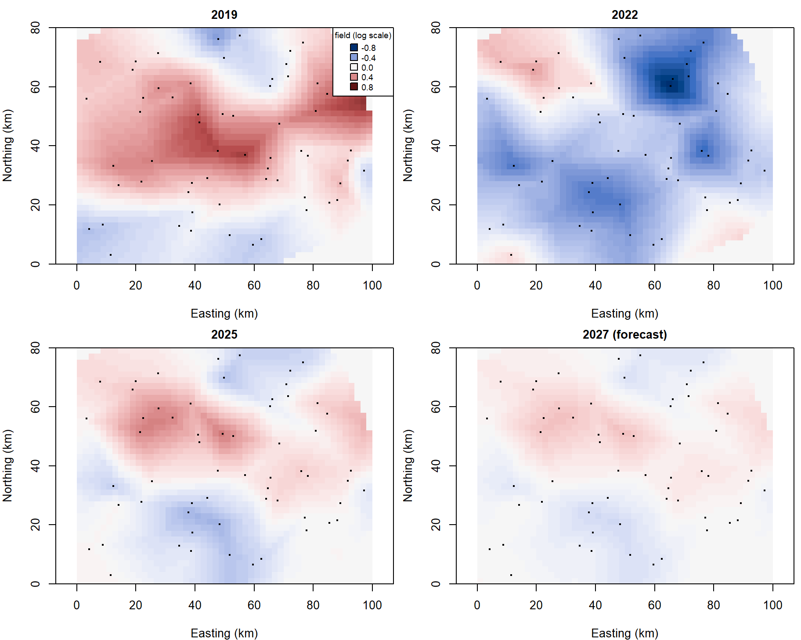
Blue is fewer birds than habitat and precipitation predict, red is more. Patches persist for several years and move slowly, which is what \(\hat\rho =\) 0.72 means on a map. The 2027 forecast is the 2025 map faded by \(\hat\rho^2 =\) 0.52: with no new counts, the best guess for each departure is that it shrinks toward zero.
Now the first question. The fitted model splits each lek's expected log count into a precipitation part, \(\hat\beta_2\,\text{precip}_{s,t}\), and the field. Averaged over leks, by year:
p_obs <- predict(m3)
p_obs$precip_part <- tidy(m3)$estimate[3] * p_obs$precip_z
parts <- aggregate(cbind(precip_part, epsilon_st) ~ year, data = p_obs, FUN = mean)
round(parts[parts$year %in% c(yr_peak, 2025), ], 2)## year precip_part epsilon_st
## 9 2019 0.28 0.14
## 15 2025 -0.52 0.03Between 2019 and 2025 the mean log expected count fell by 0.91. Precipitation accounts for 0.80 of that and the spatiotemporal field for 0.10: 88% weather, 12% something else. District-wide, the drop is mostly weather. The 2025 map shows the few places where it isn't.
For the forecast, future precipitation is unknown, so we use two scenarios again.17 predict() with nsim draws from the joint uncertainty in the coefficients and fields:
leks <- unique(lk[, c("lek", "x_km", "y_km", "sage_c")])
new_avg <- merge(leks, data.frame(year = 2026:2027, precip_z = 0)) # every lek in both years
new_dry <- transform(new_avg, precip_z = -1)
set.seed(746)
sim_avg <- predict(m3f, newdata = new_avg, nsim = 500) # rows = lek-years, columns = draws
sim_dry <- predict(m3f, newdata = new_dry, nsim = 500)
total_by_year <- function(sims) {
sapply(2026:2027, function(yr) quantile(colSums(exp(sims[new_avg$year == yr, ])), c(0.025, 0.5, 0.975)))
}
fc_tab <- rbind(average = as.vector(total_by_year(sim_avg)), dry = as.vector(total_by_year(sim_dry)))
colnames(fc_tab) <- c("2026 low", "2026 median", "2026 high", "2027 low", "2027 median", "2027 high")
round(fc_tab) # expected district total, males## 2026 low 2026 median 2026 high 2027 low 2027 median 2027 high
## average 2208 2748 3361 2095 2714 3483
## dry 1712 2157 2660 1615 2156 2790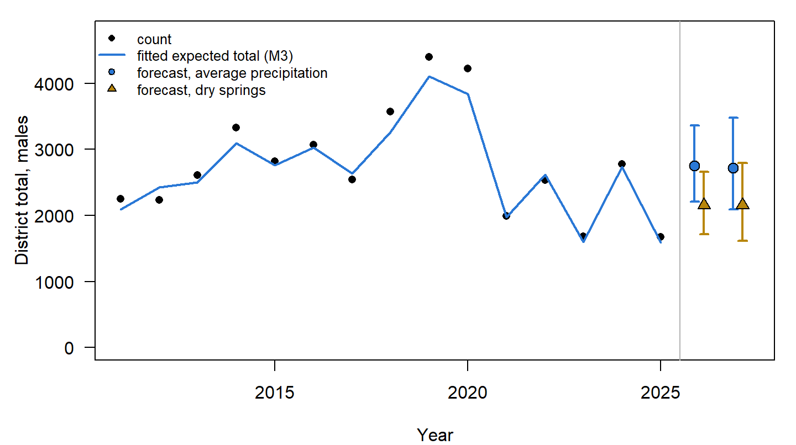
The intervals are for the expected total. A realized count adds negative binomial scatter on top, lek by lek.
Question: The forecast intervals for 2027 are wider than for 2026 under both scenarios. Name two separate reasons, one from the AR(1) field and one that would apply even if the field were known.
6. What we tell the agency
- Precipitation. A spring 1 SD wetter than average raises the next year's expected count at a lek by a factor of 1.28 (95% interval 1.22 to 1.34).
- The drop since 2019. About 88% of the drop in expected counts follows from drier springs. The rest is in the spatiotemporal field, and it is local: 5% of the district is more than 0.2 below expectation on the log scale in 2025 (the darkest blue on the map). Those are the places to look for a cause other than weather.
- Persistence. Local departures carry over from year to year (\(\hat\rho =\) 0.72), so the low areas are likely to stay low for the next few years unless something changes.
- Forecast. With average precipitation, expect a district total around 2748 in 2026 (95% interval for the expected total 2208 to 3361); with another dry spring, around
The AR(1) model is corroborated against rivals with no memory and, less firmly, against one with permanent memory. Whether the low areas reflect something lasting (habitat loss) or something that fades (a local drought the covariate missed) is the M3-versus-M4 question, and 15 years of counts leave it open.
A take-home exercise
The WOD (workout of the day, a short exercise) that goes with this page is Filter by Hand. It works one step of the Kalman filter on paper and then fits a state-space model to a different data set, counts of desert bighorn sheep.
Dynamic occupancy
The hidden state doesn't have to be a number. For many species the question is whether a site is occupied at all, and the state is 1 or 0. A dynamic occupancy model has the same two layers as the state-space model above: a state equation (sites go extinct and get recolonized) and an observation equation (an occupied site can be missed). The Kalman filter doesn't apply to a 0/1 state, but an algorithm with the same predict-and-update rhythm does.
1. A hidden state that is 0 or 1
American pikas live in talus (rock piles) and tolerate heat poorly. A monitoring program visits 100 talus patches three times each summer for eight years and records whether pikas were detected on each visit (seen, heard, or fresh hay piles found).
pikas <- read.csv("data/PikaPatches.csv")
head(pikas, 3)## patch elev_m year temp_z visit1 visit2 visit3 occupied_true
## 1 T001 2468 2018 1.03 0 0 1 1
## 2 T002 3108 2018 1.03 1 0 1 1
## 3 T003 2685 2018 1.03 1 1 1 1temp_z is that summer's mean temperature in SD units, the same for every patch in a year: a covariate that varies in time.18 The program's question: do hot summers raise the chance that a patch loses its pikas?
The model, for patch \(i\) in year \(t\) with true state \(z_{i,t}\):
\[\begin{aligned} \text{first year:} \quad & z_{i,1} \sim \text{Bernoulli}(\psi_i), & \text{logit}\,\psi_i = \alpha_0 + \alpha_1\,\text{elev}_i\\ \text{state:} \quad & z_{i,t+1} \sim \begin{cases}\text{Bernoulli}(1 - \varepsilon_t) & \text{if } z_{i,t} = 1\\ \text{Bernoulli}(\gamma) & \text{if } z_{i,t} = 0\end{cases}, & \text{logit}\,\varepsilon_t = e_0 + e_1\,\text{temp}_t\\ \text{observation:} \quad & y_{i,t,k} \sim \text{Bernoulli}(p\,z_{i,t}) \end{aligned}\]
An occupied patch goes extinct with probability \(\varepsilon_t\), which depends on that summer's temperature; an empty one is colonized with probability \(\gamma\); and each visit to an occupied patch detects pikas with probability \(p\). An empty patch never produces a detection.19 The temperature covariate is in the state equation, like precipitation in the grouse model.
years <- sort(unique(pikas$year))
n_yr <- length(years)
n_patch <- length(unique(pikas$patch))
pikas <- pikas[order(pikas$year, pikas$patch), ]
det <- matrix(pikas$visit1 + pikas$visit2 + pikas$visit3, n_patch, n_yr) # detections (0 to 3): patch by year
elev_c <- (pikas$elev_m[pikas$year == years[1]] - 2800) / 500 # 500-m units above 2800 m
temp <- pikas$temp_z[match(years, pikas$year)]
rbind(temp = temp, detected = colMeans(det > 0)) # share of patches with a detection## [,1] [,2] [,3] [,4] [,5] [,6] [,7] [,8]
## temp 1.03 -0.39 0.60 -1.25 -0.95 -0.06 -0.60 1.62
## detected 0.52 0.46 0.44 0.37 0.52 0.50 0.46 0.46The share of patches with at least one detection is the "naive" occupancy. It tends to understate the truth, because a patch with three misses looks the same as an empty one.
2. The likelihood by matrix multiplication
For the grouse, integrating out the hidden states meant an integral. Here it means a sum over every sequence of 0s and 1s the patch could have followed: \(2^8 = 256\) sequences per patch. The forward algorithm gets that sum without listing them. It carries a pair of numbers through time,
\[\boldsymbol\alpha_t = \big(P(\text{occupied in year } t \text{ and the data so far}),\ \ P(\text{empty in year } t \text{ and the data so far})\big)\]
and alternates two moves:
- Predict: multiply by the transition matrix, \(\Gamma_t = \begin{pmatrix} 1 - \varepsilon_t & \varepsilon_t \\ \gamma & 1 - \gamma \end{pmatrix}\) (rows: state this year; columns: state next year).
- Update: multiply each entry by the probability of that year's visits given the state. With \(d\) detections in 3 visits that is \(p^d (1 - p)^{3 - d}\) for an occupied patch; for an empty patch it is 1 if \(d = 0\) and 0 otherwise.
At the end, the two entries of \(\boldsymbol\alpha\) sum to the likelihood of the patch's whole history.
Here is a three-year history with 2, 0, and 1 detections, using \(\psi = 0.5\), \(\varepsilon = 0.2\), \(\gamma = 0.1\), \(p = 0.6\):
| Step | P(occupied and data so far) | P(empty and data so far) |
|---|---|---|
| start | 0.50000 | 0.5000 |
| update year 1 (2 detections) | 0.07200 | 0.0000 |
| predict year 2 | 0.05760 | 0.0144 |
| update year 2 (0 detections) | 0.00369 | 0.0144 |
| predict year 3 | 0.00439 | 0.0137 |
| update year 3 (1 detections) | 0.00042 | 0.0000 |
Question: After the year-2 update, what is the probability that the patch was occupied in year 2, given the data through year 2? The year-3 update sets the "empty" entry to zero. Why?
The full likelihood runs this for every patch, with \(\psi\) depending on elevation and \(\varepsilon\) on temperature:
patch_lik <- function(d, psi, gam, eps, p) {
alpha <- c(psi, 1 - psi)
for (t in seq_along(d)) {
if (t > 1) alpha <- alpha %*% matrix(c(1 - eps[t - 1], eps[t - 1], gam, 1 - gam), 2, byrow = TRUE) # predict
alpha <- alpha * c(p^d[t] * (1 - p)^(3 - d[t]), d[t] == 0) # update
}
sum(alpha)
}
nll_occ <- function(par) {
psi <- plogis(par[1] + par[2] * elev_c)
gam <- plogis(par[3])
eps <- plogis(par[4] + par[5] * temp) # temp[t] acts on the transition from year t to t + 1
p <- plogis(par[6])
-sum(sapply(seq_len(n_patch), function(i) log(patch_lik(det[i, ], psi[i], gam, eps, p))))
}
fit_occ <- optim(c(0, 0, -2, -1, 0, 0), nll_occ, method = "BFGS", hessian = TRUE)The unmarked package's colext() fits the same model. It wants the detections as one wide matrix, with a column per visit:
library(unmarked)
y_wide <- matrix(NA, n_patch, 3 * n_yr)
for (t in seq_len(n_yr)) {
y_wide[, 3 * (t - 1) + 1:3] <- as.matrix(pikas[pikas$year == years[t], c("visit1", "visit2", "visit3")])
}
umf <- unmarkedMultFrame(y = y_wide, siteCovs = data.frame(elev_c = elev_c),
yearlySiteCovs = list(temp = matrix(temp, n_patch, n_yr, byrow = TRUE)),
numPrimary = n_yr)
fit_colext <- colext(psiformula = ~ elev_c, gammaformula = ~ 1, epsilonformula = ~ temp, pformula = ~ 1,
data = umf)
c(by_hand = -fit_occ$value, colext = as.numeric(logLik(fit_colext))) # log-likelihoods## by_hand colext
## -1116.686 -1116.688| Parameter | Truth | Estimate | SE |
|---|---|---|---|
| first-year occupancy: intercept (logit) | 0.50 | 0.31 | 0.23 |
| first-year occupancy: elevation | 1.00 | 0.94 | 0.40 |
| colonization: intercept (logit) | -1.99 | -1.77 | 0.16 |
| extinction: intercept (logit) | -1.60 | -1.60 | 0.17 |
| extinction: temperature | 0.80 | 0.78 | 0.22 |
| detection: intercept (logit) | 0.41 | 0.32 | 0.07 |
The two log-likelihoods agree. The temperature coefficient is 0.78 (95% interval 0.34 to 1.22): the estimated extinction probability is 0.08 after a summer 1 SD cooler than average, 0.17 after an average one, and 0.30 after one 1 SD hotter. Detection probability per visit is 0.58, so three visits miss an occupied patch with probability \((1 - \hat p)^3 =\) 0.08.
The fitted model also gives the occupancy trajectory. Each year's expected occupancy follows from the last: \(\psi_{t+1} = \psi_t (1 - \varepsilon_t) + (1 - \psi_t)\,\gamma\).
psi_hat <- matrix(NA, n_patch, n_yr)
psi_hat[, 1] <- plogis(fit_occ$par[1] + fit_occ$par[2] * elev_c)
for (t in 2:n_yr) psi_hat[, t] <- psi_hat[, t - 1] * (1 - eps_hat(temp[t - 1])) + (1 - psi_hat[, t - 1]) * gam_hat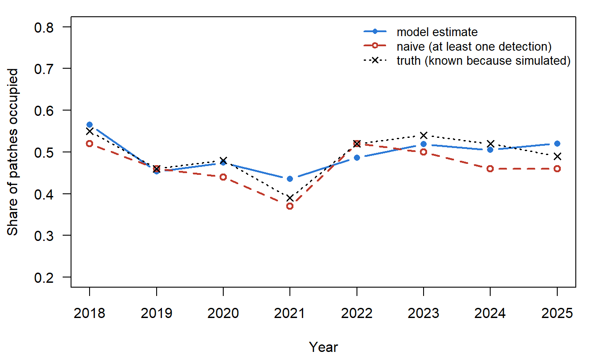
If every summer were average, occupancy would settle at \(\hat\gamma / (\hat\gamma + \hat\varepsilon) =\) 0.46. If every summer were 1 SD hotter it would settle at 0.32.
Question: A patch had detections in 2019 and in 2021, and none on three visits in 2020. Either pikas were there in 2020 and were missed three times, or the patch went extinct and was recolonized. Using \(\hat\varepsilon =\) 0.17 (average summers), \(\hat\gamma =\) 0.15, and \(\hat p =\) 0.58, which is more probable, and by how much?
Discussion
Discussion: Line up the grouse state-space model and the pika occupancy model: what plays the part of the state, the process noise, the observation noise, and the covariate in each? The grouse model struggled to separate process from observation noise. The pika model estimated detection probability with a small standard error. What does the pika design have that the grouse series lacked?
Bonus: more hidden-state models
A model with a hidden state that moves among a few categories is a hidden Markov model (HMM), and the forward algorithm fits all of them. Some relatives of the model above:
- More states. Unoccupied, occupied without breeding, occupied with breeding; or for one tagged animal, resting, foraging, and traveling, with step lengths and turning angles as the observations (McClintock et al. 2020, Ecology Letters 23: 1878-1903; the
momentuHMMandhmmTMBpackages). - Counts instead of presence. The open-population N-mixture model (Dail and Madsen 2011, Biometrics 67: 577-587;
pcountOpen()inunmarked) has abundance as the hidden state and repeated counts as the observations, a bridge between this section and the grouse model. - Space. Colonization that depends on occupied neighbors, or a spatial random field on occupancy (the
spOccupancypackage). - Marked animals. Capture-recapture survival models are HMMs with states alive and dead, and "detected or not" as the observation.
Every model on this page has the same skeleton: a hidden state that changes by a rule with noise in it, and data that are a noisy view of the state. Choosing a model means writing down those two pieces for your system, and fitting it means integrating or summing the hidden state out.
Bolker's chapter is from 2008. Its framing (process error, observation error, and what happens when you ignore one) is still the right one, and this page follows it. The fitting tools have changed: SIMEX and the extended Kalman filter have mostly given way to software that integrates over the hidden states directly (
TMB, Stan). For an up-to-date review with code, see Auger-Méthé et al. (2021, "A guide to state-space modeling of ecological time series," Ecological Monographs 91: e01470).↩Wet springs mean more forbs and insects for chicks. Males first show up on leks the spring after they hatch, so last year's precipitation is the one that should matter for this year's count. The data are simulated, so the true parameter values are known; the script is sim_Week15_grouse.R, and
log_trueis the true log population size, which a real survey would not have.↩The Gompertz model's growth rate falls with \(\log N\); the Ricker model's falls with \(N\) itself. Gompertz is the usual starting point for time-series work because it is linear on the log scale, which is what makes the Kalman filter below available (Dennis et al. 2006, Ecological Monographs 76: 323-341). With a different growth function the model is no longer linear and needs the general-purpose method.↩
The Week 5 page compared the two kinds of noise for a population with a steady trend and no density dependence. Process noise there accumulated without limit. Density dependence changes that: with \(b < 1\) the population keeps getting pulled back, so process noise accumulates only up to a point.↩
Something has to be assumed about the population before the first count. Here it is that the population had been fluctuating around its equilibrium, so the state before year 1 has mean \(a/(1-b)\) and variance \(\sigma_p^2/(1-b^2)\) (the "stationary" assumption, which needs \(|b| < 1\)). The alternatives are to estimate the starting state as one more parameter, or to give it a very wide prior. The choice matters most for short series.↩
Without the covariate,
glmmTMBfits this model asglmmTMB(y ~ 1 + ar1(year_f + 0 | pop)): an AR(1) random effect plus the residual. With a covariate in the formula, though,y ~ w + ar1(...)is a different model, a regression with AR(1) errors, in which the covariate moves that year's mean only and the effect is not carried forward. The distinction is the one between AR errors and a lagged response.↩Intervals come from the Hessian on the scale
optim()worked on (logit for \(b\), log for the SDs), back-transformed. They are rough for the two SDs, whose likelihood surface is far from quadratic (section 5).↩RTMB(Kristensen) lets you write the function in plain R;TMBitself (Kristensen et al. 2016, Journal of Statistical Software 70(5)) requires C++. Both get exact gradients by automatic differentiation, which is whynlminb()is handedobj$gr. The same function can be passed totmbstanto sample the posterior with Stan instead of maximizing; a Bayesian fit samples the states along with the parameters, as in the Week 13 random-slope model. Other routes to the same model:MARSS(Holmes et al. 2012, R Journal 4: 11-19), which fits linear Normal state-space models for many populations at once, andmvgam(Clark and Wells 2023, Methods in Ecology and Evolution 14: 771-784), which combines state-space dynamics with the smooths of Week 13.↩These bands treat the estimated parameters as known. They leave out the uncertainty in \(b\), which is large here and matters most for how fast the forecast returns to equilibrium. To include it, draw parameter sets from their estimated sampling distribution and forecast from each, or fit the model as a Bayesian one and forecast from each posterior draw.↩
The bias is the regression-dilution or errors-in-variables problem. For density dependence see Freckleton et al. (2006, Journal of Animal Ecology 75: 837-851) and Knape (2008, Ecology 89: 2994-3000). Bolker's section 11.5 describes SIMEX, a correction that works when the observation variance is known from other data.↩
Auger-Méthé et al. (2016, "State-space models' dirty little secrets," Scientific Reports 6: 26677) document this for even the simplest linear Normal models. It is the same flat-surface problem as estimating a variance among four stands.↩
Kalman published the filter in 1960 for tracking and navigation; it was used to estimate spacecraft position in the Apollo program. The smoothed estimates in section 4 come from a second pass that runs backward through the series (the Rauch-Tung-Striebel smoother), which the Laplace approximation reproduces without being asked.↩
Simulated; the script is sim_Week15_leks.R.
eps_trueis the true value of the year-to-year field at each lek, kept for checking.↩sdmTMBcalls the AR(1) coefficientrho(it is \(\phi\) on the Week 12 page) and usesphifor the negative binomial's size parameter. Itssigma_Ois \(\sigma_s\) andsigma_Eis \(\sigma_{st}\).↩To let a covariate's effect persist in a model of this form, add lagged copies of the covariate (
precip_lag1,precip_lag2) as predictors, or fit a model with the covariate inside the state equation (RTMB, or thetinyVASTpackage's time-series terms).↩This scheme is sometimes called leave-future-out cross-validation;
sdmTMB_cv()can do it when given fold ids that follow time. The held-out years use their observed precipitation, which is fair, sinceprecip_zis the previous spring's value and is known before the count.↩The 2026 count depends on spring 2025 precipitation, which the agency would already have. It isn't in this data set, so both forecast years use scenarios.↩
Simulated; the script is sim_Week15_pikas.R, and
occupied_trueis the true state. The model is from MacKenzie et al. (2003, Ecology 84: 2200-2207).↩So the model assumes no false positives, and that a patch's state doesn't change between visits within a summer (the "closure" assumption). Old hay piles mistaken for fresh ones would violate the first.↩